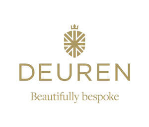
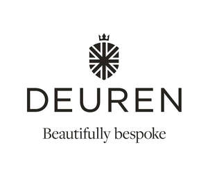

Trade Mark Journal No.2025/040 3 October 2025
UK00004261152 8 September 2025 (6,19,20,35,37,42)
Mark 1

Mark 2

- Class 6
- Metal doors; garage doors of metal; doors of metal; parts, fittings and accessories for all of the aforesaid; Hinges for doors and windows (Metal -); Doors and windows of metal; Ironwork for doors; Doors, gates, windows and window coverings of metal; Metal doors; Doors of metal; Aluminium doors; Metal locks for doors; Metal garage doors; Garage doors of metal; Metal sliding doors; Patio doors of metal; Metal patio doors; Revolving doors of metal; Metal panels for doors; Panels of metal for doors; Metallic doors; Sliding doors of metal for buildings; Aluminium patio doors; Shutter doors of metal; Glazed doors of metal; Handles of metal for doors; Doors of metal for buildings; Frames of metal for doors; Screen doors of metal; Patio doors (Metal framed -); Metallic frames for sliding doors; Door knockers; Knockers (Door -); Trap doors of metal; Fire doors of metal; Latches (Metal -) being fittings for doors; Folding doors of metal; Metal folding doors; Door hinges of metal; Swing doors of metal; Metal bolts for locking doors; Door jambs of metal; Furniture for doors [metal]; Fireproof doors of metal; Fittings of metal for doors; Safety doors of metal; Runners of metal for sliding doors; Metal runners for sliding doors; Roller doors of metal; Roll doors of metal; Rollers (Metal -) for sliding doors; Metallic fire doors; Insulating doors of metal; Tilting metal doors; Metallic doors for strongbox; Aluminium residential doors; Accordion doors of metal; Outer doors of metal; Door panels of metal; Metal door latches; Insect screens of metal for doors; Door flaps of metal; Armoured doors of metal; Armored doors of metal; Metal components for doors; Ventilation grilles of metal for fitting in doors; Door knockers of metal; Knockers (Door -) of metal; Safety fittings of metal for doors.
- Class 19
- Doors, not of metal; garage doors, not of metal; parts, fittings and accessories for all of the aforesaid; Glass doors; Wooden doors; Mirror doors; Vinyl doors; Glass panels for doors; Doors, gates, windows and window coverings, not of metal; Vinyl sliding doors; Non-metal doors; Garage doors (Non-metallic -); Non-metal sliding doors; Vinyl patio doors; Doors (Non-metallic -) for use in garages; Shutter doors (Non-metallic -); Lift-up doors, non-metallic; Sliding doors, not of metal; Frames (Non-metallic -) for doors; Revolving doors not of metal; Transparent doors of glass for buildings; Patio doors [non-metallic frame]; Doors made of glass for buildings; Frames (Non-metallic -) for glazed doors; Non-metal folding doors; Doors, not of metal; Trap doors (Non-metallic -); Glazed doors, not of metal; Glazed doors [non-metallic frame]; Doors made of wood for buildings; Wooden door frames; Door jambs not of metal.
- Class 20
- Cupboard doors; Cabinet doors; Hinges for doors and windows (Non-metallic -); Doors for furniture; Furniture doors; Wardrobe doors; Sliding doors for furniture; Wardrobe sliding doors; Non-metallic sliding doors for furniture; Expandable safety gates for door openings; Transparent doors of glass for furniture; Rails (Non-metallic -) for sliding doors; Door hinges (Non-metallic -); Non-metallic tracks for sliding doors; Furniture for doors [non-metallic]; Doors made of glass for furniture; Furniture doors made of glass; Rollers (Non-metallic -) for sliding doors; Runners (Non-metallic -) for sliding doors; Mechanisms (Non-metallic, non-electric -) for opening doors; Door, gate and window fittings, non-metallic; Runners, not of metal, for sliding doors; Non-metal door latches; Paper screen doors; Horizontal slatted blinds [indoor] for doors; Rails (Non-metallic -) for folding doors.
- Class 35
- Retail services in relation to doors, garage doors, wooden doors, metal doors, garage doors of metal, doors of metal, doors of wood; online retail services in relation to doors, garage doors, metal doors, wooden doors, garage doors of metal and doors of metal; consultancy, advisory and information services in relation to all of the aforesaid; Retail services connected with the sale of furniture; Retail services in relation to furniture; Retail services relating to furniture; Retail services in relation to building materials.
- Class 37
- Construction and installation of doors, garage doors, metal doors and metal garage doors; repair and maintenance of doors, garage doors, metal doors and metal garage doors; consultancy, advisory and information services in relation to all of the aforesaid; Installation of doors and windows; Doors and windows (Installation of -); Windows (Installation of doors and -); Installation of doors; Installation of glass in conservatories, windows, doors and greenhouses; Installation of insulating glass in conservatories, windows, doors and greenhouses; Installation of door fittings; Installation of door openers; Installation of door closers; Installation of gates; Installation of locks; Installation of door openers and closers; Installation of window frames; Repair of door frames.
- Class 42
- Design of doors and garage doors; consultancy, advisory and information services in relation to all of the aforesaid; Retail design services; Interior design services for the retail industry; Architectural services for the design of retail premises; Interior design services for shops; Services for the design of business premises; Design of interior decor.
Deuren Limited